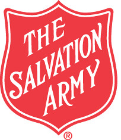
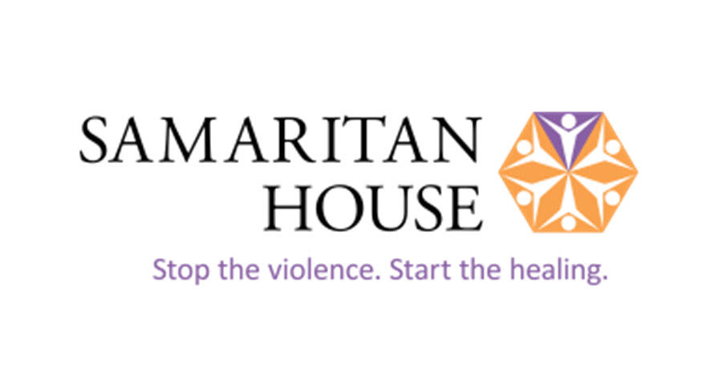
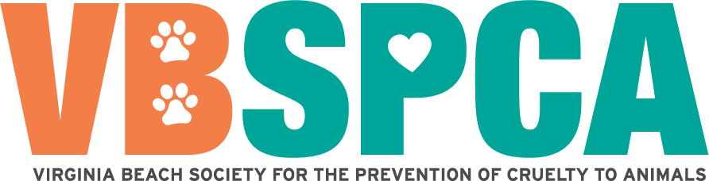
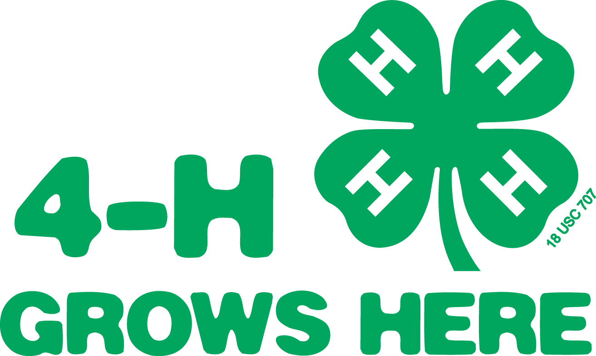
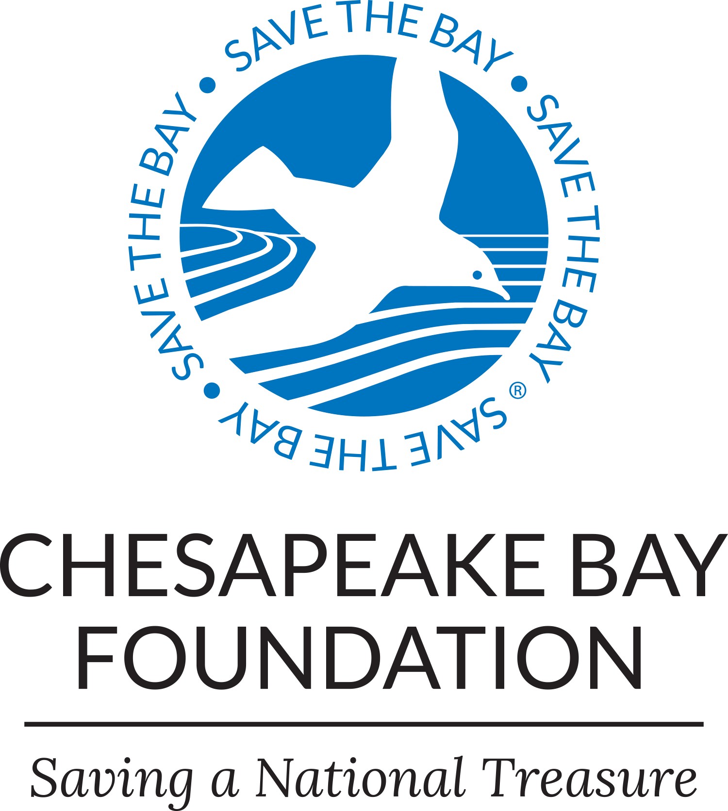
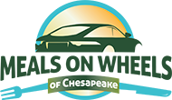
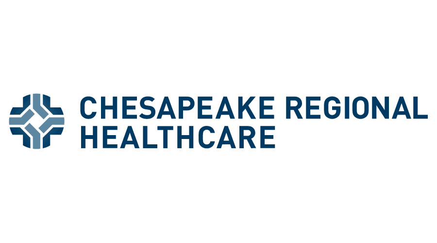
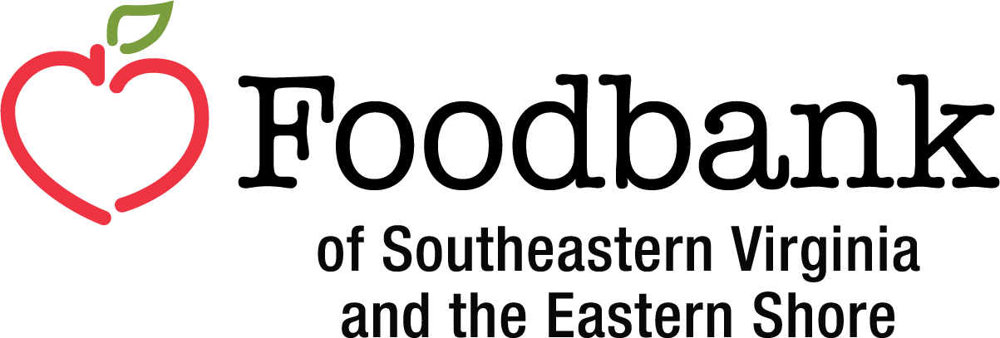

Virginia Beach Volunteer Opportunities
The Salvation Army

Salvation Army is a non-profit organization that provides a variety of services to those in need, including food, shelter, and clothing. They also offer volunteer opportunities for those who want to give back to their community.
The Samaritan House

Samaritan House helps people free themselves from domestic and sexual violence, human trafficking, and homelessness.
Potter's House Church
Potter’s House is staffed and operated by volunteers, and its budget is based solely on contributions from collections and other donations throughout the year. Financial and material support is also provided by private companies and organizations in the community.
Virginia Beach Society for the Prevention of Cruelty to Animals

Volunteers play a central role in the delivery of the Virginia Beach SPCA’s mission of compassion, and we strive to create a rewarding experience for those who dedicate their time and energy our cause. Through collaboration and communication, staff and volunteers work together to create a positive and productive shelter environment, providing quality care to our animals and humane education to our community.
4-H Volunteer

The Virginia Beach 4-H program looks to volunteers to help our young people learn the skills they need to prepare for their futures while also having fun!
Chesapeake Volunteer Opportunities
Chesapeake Bay Foundation

Do you enjoy working with others to help restore the Chesapeake Bay and its rivers and streams? Whether growing oysters, planting trees, or helping in our offices, there are plenty of ways you can contribute.
Chesapeake Meals on Wheels

Do you want to bring meals and a caring spirit to neighbors in need?
Chesapeake Humane Society
The Chesapeake Humane Society is a non-profit organization that is funded by private donors – we do not receive government subsidies. The Society supports the homeless and undeserved animals of Chesapeake.
Chesapeake Volunteer Healthcare

Volunteering at Chesapeake Regional Healthcare is a rewarding way to make new friends and discover new interests. By working in different areas throughout the hospital, volunteers of all ages gain experience and knowledge.
Chesapeake Public Library
Come Volunteer at the Chesapeake public library! While volunteering, you can help with various tasks such as assisting patrons, organizing books, and participating in library events And you can gain soft skills.
Chesapeake Food Bank Online

Volunteers are essential to our daily operations, helping with everything from sorting and packing food to managing distribution events, providing administrative support, engaging in community outreach, and more. Join a dedicated force of more than 7,000 volunteers and be part of our shared mission to end hunger across Southeastern Virginia and the Eastern Shore..
Norfolk Volunteer Opportunities
Downtown Norfolk Volunteer Opportunities

Downtown thrives because of people like you. Volunteers bring energy and heart to our community by supporting festivals, events, cleanups, and special projects throughout the year. Whether you’re looking to give back, meet new people, or simply support the place you love, there are many ways to make a difference. Every hour of your time helps keep Downtown vibrant, welcoming, and full of life.
Volunteer with Norfolk Public School

Norfolk Public Schools is looking for people who want to make a difference in the lives of our students. The time commitment is nothing compared to the lives you will change, or the lives that will change yours.
Norfolk Substance Abuse Services Volunteer Opportunities

The mission of the Substance Abuse Case Management Program is to improve the lives of individuals with substance abuse and/or co-occurring disorders. An adjunct to treatment services, case management improves post-treatment outcomes.
Norfolk Child and Adolescent Volunteer Opportunities

The Norfolk Community Services Board’s (NCSB) Child & Adolescent Services are an important resource
for families in the City of Norfolk.
The goal is to enhance the lives of children, adolescents and their families by providing strength
based clinical services and engaging in partnership with the youth and their guardian.
Keep Norfolk Beautiful Volunteer

Keep Norfolk Beautiful works to lead our community to reduce litter, recycle right, and beautify Norfolk through education and volunteerism. These efforts help support clean, safe, and resilient neighborhoods.
Community Emergency Response Team Volunteer

Community Emergency Response Team is a non-profit organization that provides support and resources to individuals and families in need. They offer various volunteer opportunities for those who want to make a difference in their community.